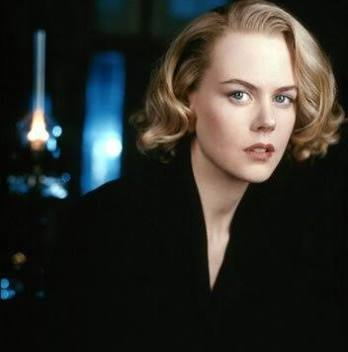
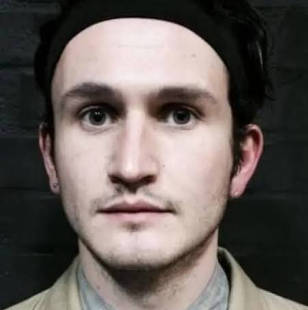
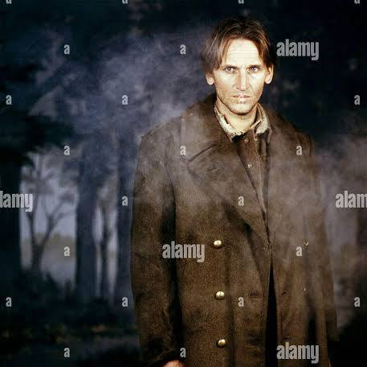
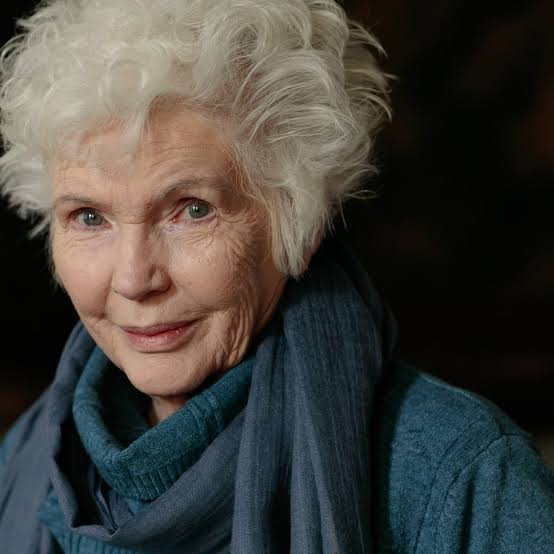
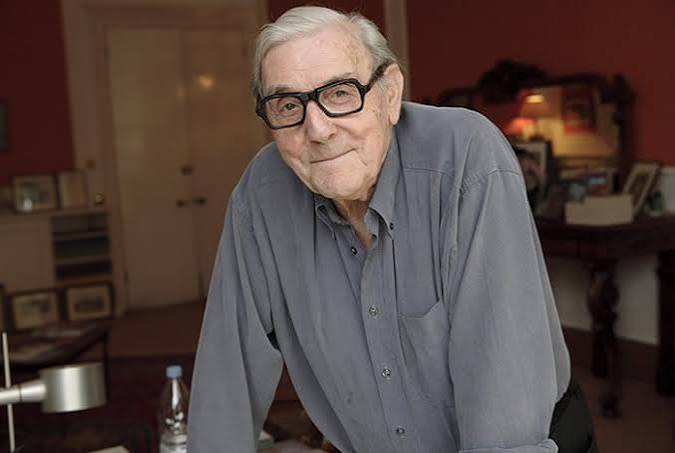
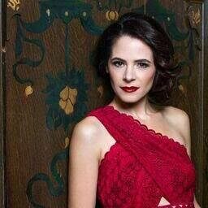
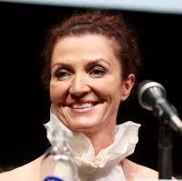
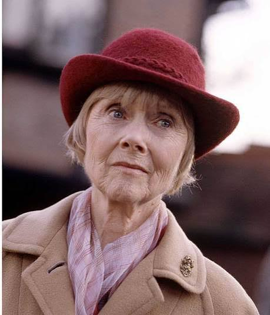

La Familia Stewart
Nicole Kidman es Grace Stewart

La estrella australiana brinda una actuación consagratoria como una madre devota, severa y atrapada
en el
dolor de la posguerra. Su personaje intenta proteger a sus hijos de la luz del día debido a una
enfermedad fotosensible, mientras lucha por mantener la cordura frente a los ruidos inexplicables de
la
mansión.
Alakina Mann es Anne Stewart
En su papel debut a los 11 años, interpreta a la hija mayor. Es rebelde, desafiante y la primera en
asegurar que hay intrusos ("fantasmas") viviendo en la casa con ellos, chocando constantemente con
el
escepticismo de su madre.
James Bentley es Nicholas Stewart

Actor infantil que debutó de forma brillante en esta cinta. Nicholas es el hijo menor, un niño
vulnerable
y asustadizo que sufre en silencio las estrictas reglas de la casa y el pánico que le generan los
sucesos paranormales.
Christopher Eccleston es Charles Stewart

El reconocido actor británico da vida al esposo de Grace. Es un soldado que regresa de la Segunda
Guerra
Mundial totalmente cambiado, distante y sumido en un profundo trauma psicológico, permaneciendo solo
un
breve tiempo en la mansión.
Los Misteriosos Sirvientes
Fionnula Flanagan es la Sra. Bertha Mills

La experimentada actriz irlandesa interpreta al ama de llaves que llega de imprevisto a la mansión.
Se
muestra como una mujer protectora, calmada y sumamente ambigua, que parece saber mucho más sobre los
secretos de la casa de lo que admite.
Eric Sykes es el Sr. Edmund Tuttle

El legendario comediante y actor británico interpreta en este drama al anciano jardinero. Su labor se
concentra en los exteriores de la propiedad, donde realiza tareas sospechosas como ocultar las
lápidas
del jardín bajo montones de hojas.
Elaine Cassidy es Lydia

Actriz irlandesa que interpreta a la joven e indefensa sirvienta muda. Lydia es el reflejo del miedo
constante dentro de la mansión y sirve como el apoyo silencioso pero aterrorizado de la Sra. Mills.
"Los Otros" (Los Intrusos en la Mansión)
Michelle Fairley es la Sra. Marlish

La reconocida actriz británica (famosa internacionalmente por interpretar años después a Catelyn
Stark en
Game of Thrones) da vida a la madre de Victor. Es la nueva propietaria viva de la mansión, quien se
encuentra sumamente alterada, asustada y confundida por las manifestaciones y ruidos inexplicables
que
causan los supuestos "fantasmas" de la casa.
Keith Allen es el Sr. Marlish
El actor galés interpreta al padre de Victor y nuevo dueño legal de la propiedad. A diferencia de su
esposa, intenta mantener un enfoque más racional ante los extraños sucesos de la enorme casa, aunque
finalmente la tensión y el miedo de su familia lo obligan a buscar ayuda externa.
Renée Asherson es la Anciana / Médium

La experimentada actriz británica ofrece una de las escenas más memorables e impactantes de la
película.
Interpreta a la médium ciega contratada por la familia Marlish para realizar una sesión espiritista
en
el piso superior, logrando contactar de manera sorprendente el plano en el que habitan Grace y sus
hijos.
Alexander Vince es Victor
El joven actor interpreta al hijo de los Marlish. Es el primer miembro de los nuevos inquilinos en
cruzarse directamente con Anne, describiéndola a sus padres como una niña que llora y deambula por
las
habitaciones oscuras de la mansión.